Where Creations Come to Life… my pantry
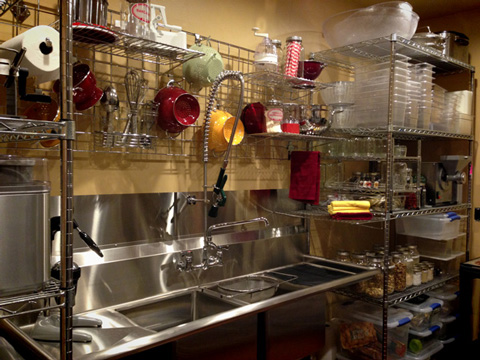
I continually receive requests to see pictures of my fridge and pantry. hehe So, I thought I would take a moment to share some pictures of my pantry. No square inch has been left untouched. haha In my head, I refer to my pantry as an art studio. It is filled with all-things-inspiring when it comes to creating and plating raw food dishes. But before I can show you more about how my pantry is organized, we need to take a tour through time so you can see what it use to look like.
________________________________________________________________________
This is what it looked like when we first moved into the house.
For those of you who haven’t seen it in person, it is hard to get the full impact of everything
we went through. In the photo below there were three small rooms that ran together.
Laundry room, shower room for cleaning off after working in the orchard, and a pantry.
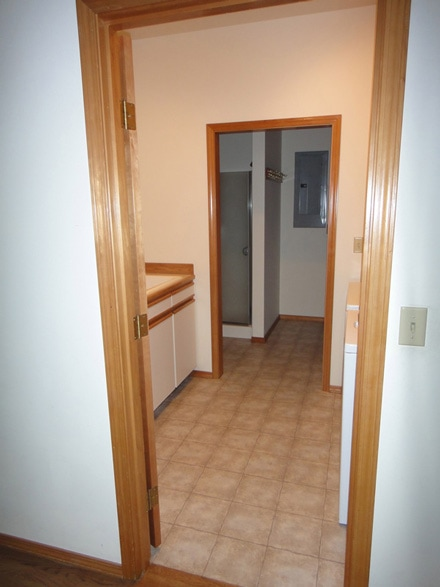
We gutted it down to the bare bones. There is Bob
playing in the shower. So hard to get that man to do any real work. hehe Just kidding.
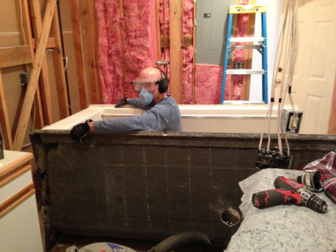
The inner dividing walls were removed except for the wall that houses the electrical panel.
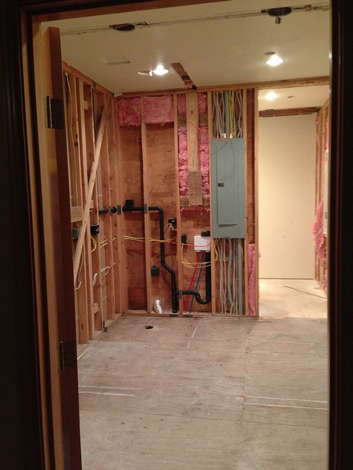
Looks like me on a bad hair day
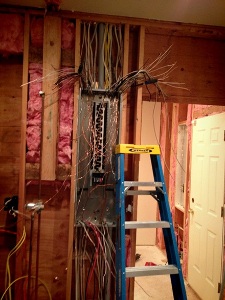
Aaah, inner walls contained, I am already feeling better…
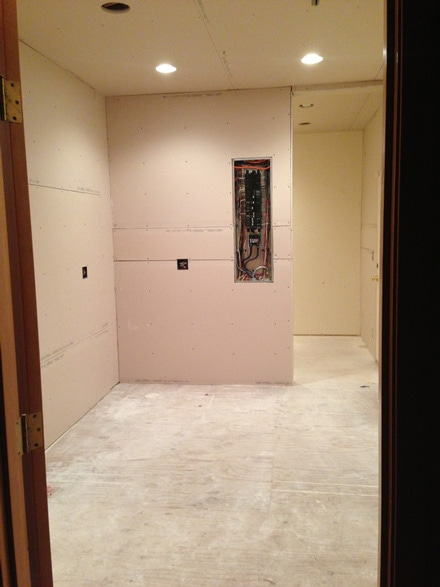
Time to warm things up with a little paint…
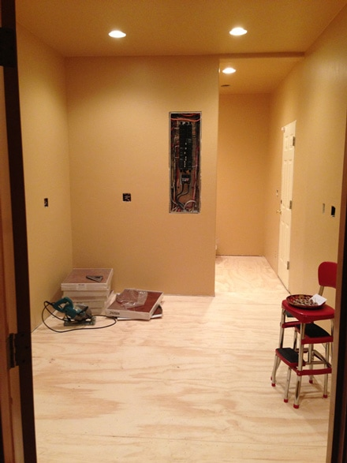
Natural cork flooring… bad hair day under control… things are looking up.
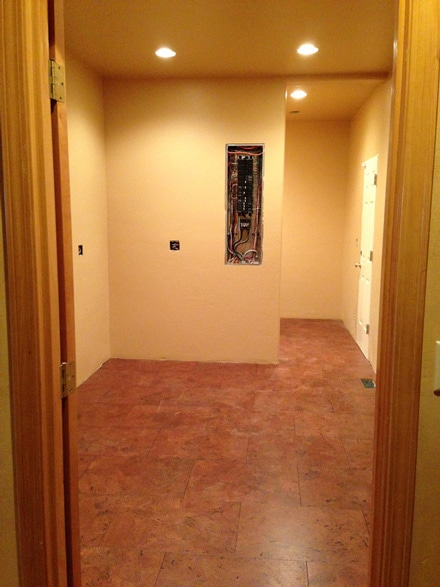
We had been living part-time in Oregon and part-time in Arizona. But this past
June, we closed up our house in Arizona and become full-time residents where our
hearts have taken root… Hood River, Oregon. In July, our household belongings
showed up from Tucson. These boxes were just from the kitchen stuff from our other
home! It took me three days to filter each box into the new pantry. Sorting,
organizing and labeling.
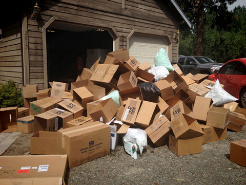
So seven days, 5 long hot baths, 16 bruises on my legs (yep, counted them during my bath),
5 gallons of sun tea, six nights of sleeping like a lumber jack…LATER…. this is the end result…
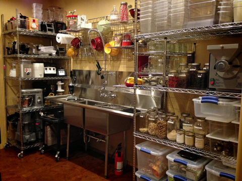
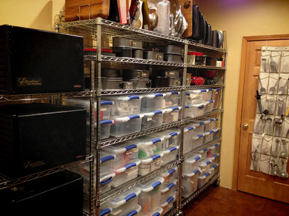
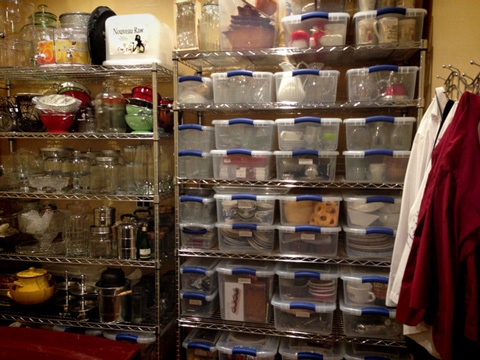

There is a WHOLE LOTTA’ stuff going on in such a small space…talk about trying
to fit 10 lbs of “stuff” into a 5 lb bag. I am already eyeballing the garage. I have
the window treatments selected in my head.;) I mean, my 2 commercial fridges and 1
commercial freezer, already take up a good portion of real estate out there.
We better build a barn SOON!
© AmieSue.com